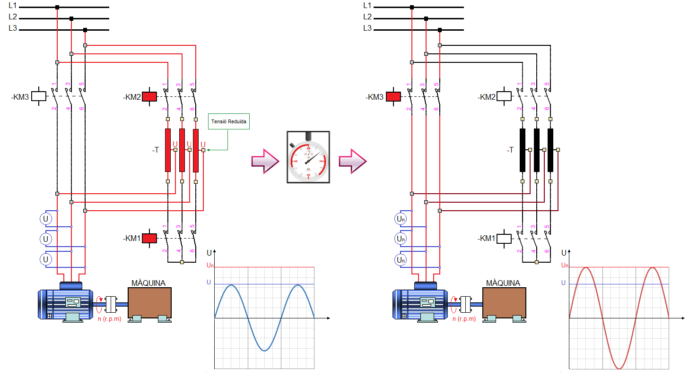
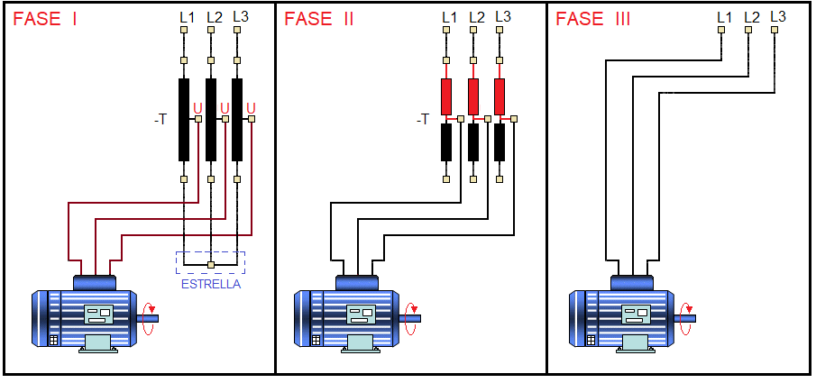

APUNTS IEA
Auto-Transformador
Aquest sistema d'arracada consisteix en utilitzar un autotransformador (-T) per subministrar una tensió reduïda U (entre el 50% i el 80%) a l'estator del motor durant el procés d'arrancada. Passat un temps determinat, el necessari perquè el motor estigue prop de la seua velocitat nominal, el motor quedarà connectat a la tensió nominal.

El procés d'arrancada es duu a terme en tres fases:

- FASE I: S'activa el contactor KM1 i l'auto-transformador queda connectat amb estrella. Immediatament després s'activa el contactor KM2 i el motor rep la tensió des de la sortida de l'autotransformador (tensió reduïda, U), es a dir, la tensió d'arrancada té com a valor Ua=U
- FASE II: una vegada assolida la velocitat d'equilibri (fi de la temporització) es desactiva el contactor KM1, es a dir, l'estrella de l'auto-transformador queda desconnectada i i el bobinats del motor queden connectats amb sèrie amb una part dels bobinats de l'auto-transformador. El tems de duració d'aquesta fase és molt xicotet (inferior a un segon) ja que tot seguit es passa a la següent fase.
- FASE III: s'activa el contactor KM3 i les bobines de l'autotransformador queden curtcircuitades i les bobines de l'estator reben la tensió nominal (Un). Tot seguit, es desactiva el contactor KM2 i l'autotransformador queda desconnectat.
| ss S'ha de remarcar que tot el procés d'arrancada es duu a terme sense interrupció de corrent en el motor, la qual cosa evita que es produïsquen fenòmens transitoris. |
Llicenciat sota la Llicència Creative Commons Reconeixement CompartirIgual 4.0